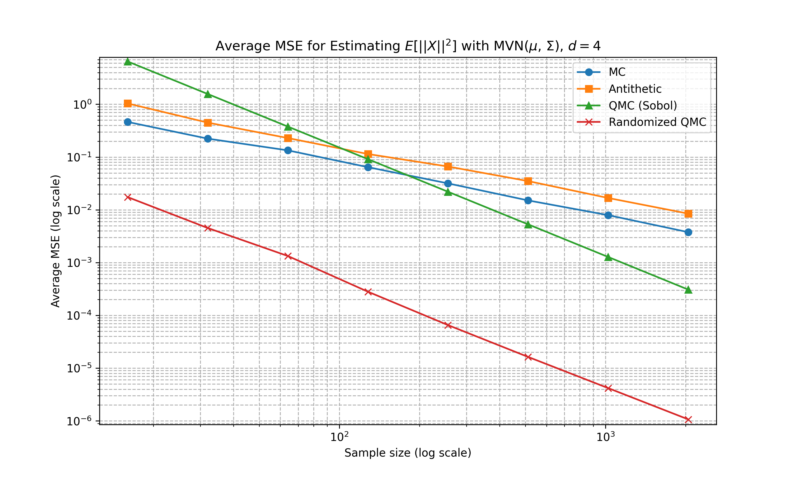
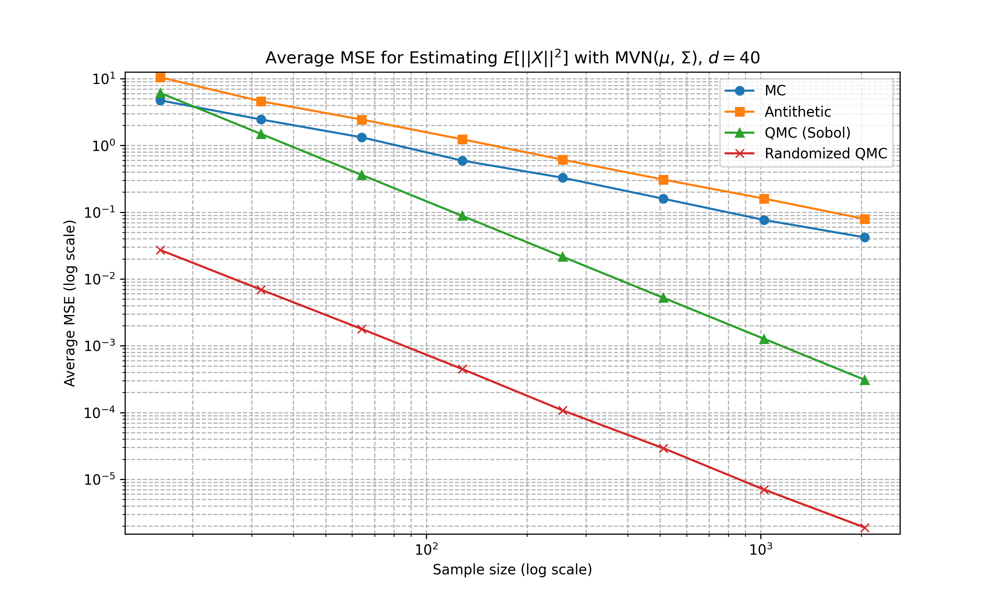
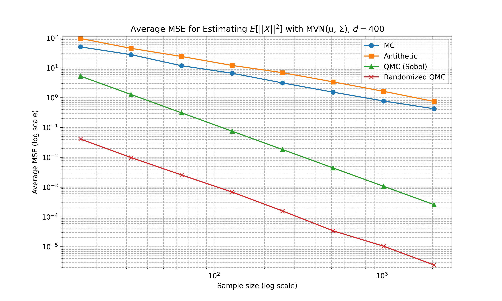
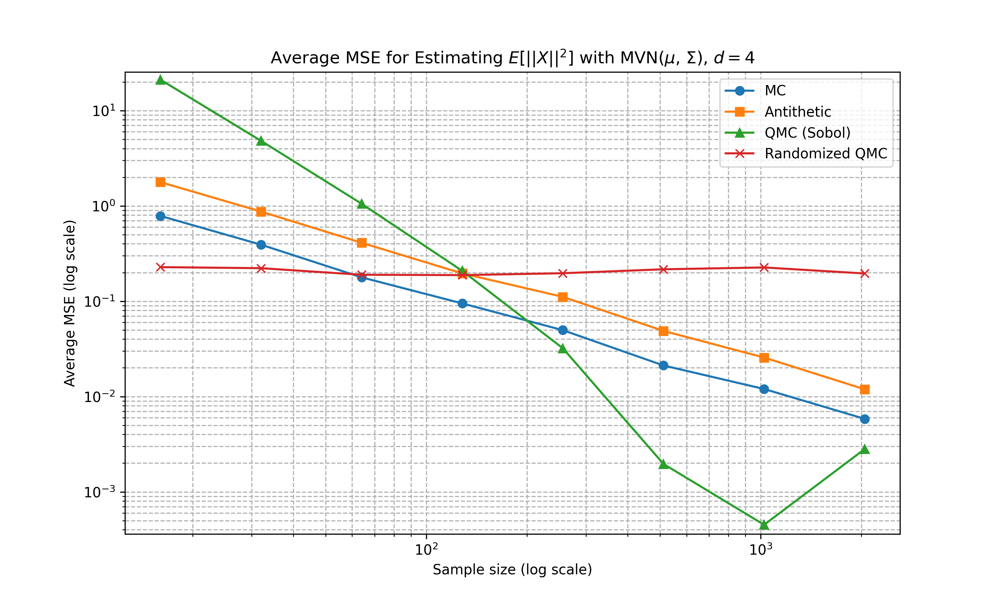
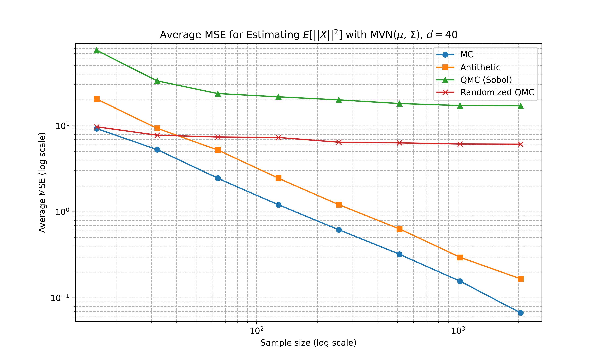
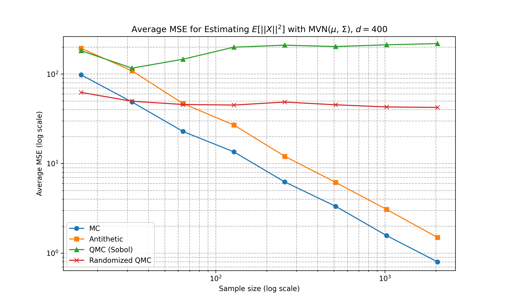

Consider the standard Monte Carlo integration problem of
\[ I = \int f(x) dq(x) = \int f(x) q(x) dx = \mathbb{E}_{X \sim q}[f(X)] \]
where \(q\) is the density of the random variable \(X\), \(f\) is a function with bounded variance (i.e. \(\int (f-I)^2 q(x) dx = \sigma^2 < \infty\)), and we try to estimate \(I\) using samples of \(X\).
Let \(D\) denote the dimension of the random variable \(X\). This would also be the dimension of the intergral \(I\).
For any estimate \(\hat{I}\) of \(I\), we will consider the mean squared error (MSE) of the estimate, i.e. \(\mathbb{E}[(\hat{I} - I)^2]\), for its capture of both bias and variance of the estimate as it decomposes into the sum of the variance and the squared bias of the estimator.
Monte Carlo
The Monte Carlo method draws \(N\) i.i.d. samples \(X_1, X_2, \ldots, X_N\) from \(X\) and compute the Monte Carlo approximate of \(I\) as follows,
\[ \hat{I}_N = \frac{1}{N}\sum_{i=1}^N f(X_i). \]
First, it is immediate from the law of large numbers that \(\hat{I}_N\) is unbiased, i.e. \(\mathbb{E}[\hat{I}_N - I] = 0\).
We can compute the MSE of the Monte Carlo estimate \(\hat{I}_N\) with \(N\) i.i.d. samples following the derivations below.
\[ \begin{split} \text{MSE}(\hat{I}_N) &= \text{Var} [\hat{I}_N] + \mathbb{E} [\hat{I}_N - I]^2 \\ &= \text{Var} \left[ \frac{1}{N} \sum_{i=1}^N f(X_i) \right] \\ &= \frac{1}{N^2} \cdot N \cdot \text{Var} [f(X_i)] \\ &= \frac{\sigma^2}{N} \end{split} \] where we used the fact that the sample are i.i.d. at the third equal sign.
Therefore, the Monte Carlo estimate is consistent, as setting \(N \to \infty\) drives the MSE to zero and the estimate is unbiased. Note that there is no dependency of MSE on the dimension \(D\).
Antithetic
Consider two random variables \(X_1, X_2\) that are identically distribution with unknown (for now) correlation. Let \(\mu, h^2\) be the mean and variance of \(X_1, X_2\) and WLOG we let \(\mu = 0\).
The average \((X_1 + X_2)/2\) is certainly \(\mu\), and the variance of the average is given by
\[ \begin{split} \text{Var} \left[\frac{X_1 + X_2}{2} \right] &= \frac{1}{4} \left( \text{Var}[X_1] + \text{Var}[X_2] + 2\text{Cov}(X_1, X_2) \right) \\ &= \frac{1}{4} \left( 2h^2 + 2\sqrt{\text{Var}[X_1] \text{Var}[X_2]}\text{Corr}(X_1, X_2) \right) \\ &=\frac{1}{4} \left( 2h^2 + 2h^2 \text{Corr}(X_1, X_2) \right) \\ &= \frac{h^2}{2} (1 + \text{Corr}(X_1, X_2) ) \end{split} \]
which means the average’s variance is minimised when \(X_1, X_2\) are perfectly negatively correlated (e.g. \(X_1 = -X_2\)). Such pair of random variables is known as the antithetic pair.
When we then use the random variables (or samples) for Monte Carlo estimation, assuming we have samples \(X_1, X_2\) and the objective quantity \(\mathbb{E}[f(X)]\), we have
\[ \mathbb{E}[f(X)] \approx \frac{1}{2}\left[ f(X_1) + f(X_2)\right] . \]
For linear \(f\), it should be obvious that doing antithetic would improve the quality of the estimate. However, the benefit could be unclear for non-linear \(f\). For example, if \(f(x) = x^2\), and assuming \(X\) is zero-mean so \((X_1, X_2 = -X_1)\) forms an antithetic pair, we get
\[ \mathbb{E}[X^2] \approx \frac{1}{2}\left[ X_1^2 + X_2^2\right] = X_1^2 \]
which is worse than drawing two independent samples.
Quasi-Monte Carlo
We return to Monte Carlo and consider the special case where our random variable \(X\) is the uniform distribution on the \(D\)-dimensional unit hypercube \([0,1]^D\). The standard Monte Carlo would randomly take points in the hypercube to sample, which does not feel very optimal. For \(N\) samples, it may be more efficient to evenly spread them across the full domain \([0,1]^D\) - this is the idea of Quasi-Monte Carlo (QMC).
We let \(X_i^Q\) for \(i = 1, 2, \ldots, D\) denote the QMC samples and the QMC estimate of the integral is thus
\[ I \approx \hat{I}_N^Q = \frac{1}{N} \sum_{i =1}^N f(X_i^Q). \]
Note that the assumption of uniform random variables is not overlly restrictive, as we can apply standard sampling techiques (e.g. inverse CDF) to convert an Unif[0,1] random variable to other commonly used random variables. See Devroye’s classic Non-Uniform Random Variate Generation for more information.
Stratification
The first thing one may propose to spread points more evenly would be stratification. If we wish to put \(N\) points in the hypercube (for simplicity we assume \(N = n^D\) for some integer \(n\)), we could divide each side of the hypercube into \(n\) even parts and construct \(n^D\) evenly sized hypercube blocks such that we can place a sample point in the center for each of the blocks. This ensures the points to be of the same distance from its neighbours.
If the function of interest \(f\) is sufficiently regular with periodicity, or have certain portions with larger than average variation, one would imagine this stratification produces a better integral approximation.
Very quickly, we have figured out the two key factors of the QMC estimate quality: the sampling sequence’s discrepancy and the variation of the function. This intuition is solidified below.
Koksma-Hlawka Inequality
The key result of QMC is the Koksma-Hlawka inequality which provides an upper bound of the estimation error of QMC for uniform random variables on \([0,1]^D\). This is given by
\[ \left| \int_{[0,1]^D} f(x) dx - \frac{1}{N} \sum_{i=1}^N f(X_i^Q)\right| = | I - \hat{I}_N^Q| \le D^*_N \cdot V_{HK}(f) \]
where \(D_N^*\) is the star-discrepancy of the sequence \(\{X_i^Q\}_{i=1}^N\) and \(V_{HK}(f)\) is the variation of function \(f\) in the Hardy-Krause sense. The star-discrepancy of a set of points \(P_N = \{ X_i^Q \}_{i=1}^N\) is defined as
\[ D_N^*(P_N) := \sup_{t \in [0,1]^D} \left| \frac{1}{N}\sum_{i=1}^N 1_{[0,t)}(X_i^Q) - \prod_{d=1}^D t_d\right| \]
which is the maximum difference between the size of rectangle from with a corner fixed at zero and the number of points from \(P_N\) it contains. The variation of Hardy-Krause sense for function \(f\) is given by
\[ V_\text{HK} (f) := \sum_{\emptyset \neq u \subseteq [D]} \int_{[0,1]^D} \left| \frac{\partial^{|u|}}{\partial x_u}f(x_u, 1_{-u}) \right| dx_u. \]
Although the above definition is a bit complicated looking, it is quite simple. Consider \(f(x, y) = xy\) so \(D = 2\), we have \(\partial_{xy} f = 0\), \(\partial_x f = y\), and \(\partial_y f = x\) and thus
\[ \begin{split} V_\text{HK}(f) &= \int |\partial_xf(x,1)|dx + \int |\partial_y f(1,y)|dy + \iint |\partial_{xy} f(x,y)|dx dy \\ &= \int 1 dx + \int 1 dy + \iint 0 dx dy = 2. \end{split} \]
A proof sketch of the Koksma-Hlawka inequality is provided below.
Low-Discrepancy Sequences
Suggested by the Koksma-Hlawka inequality, we can control the quality of QMC estimate by constructing sequences with low star-discrepancy. Multiple such sequences (called low-discrepancy sequences, for obvious reasons) exist in the literature, and below we will briefly outline a few commonly considered ones. Note that both Halton and Sobol sequences require the number of samples to be pre-determined, while Latin hypercube does not.
Halton sequence
- Pick a set of coprime bases \(b_1, b_2, \dots, b_s\) (usually the first \(s\) primes: 2, 3, 5, …).
- In dimension \(j\), take the integer index \(n\) in base \(b_j\), reverse its digits after the decimal point, and interpret as a fraction — this is the radical-inverse.
- Combine coordinates to get the \(n\)-th point.
Sobol sequence
- Uses base-2 arithmetic and direction numbers derived from primitive polynomials over GF(2).
- Each coordinate is a digital expansion using these direction numbers, ensuring good uniformity across projections.
Latin hypercube sampling
- In each dimension, divide \([0,1]\) into \(N\) equal intervals.
- Sample exactly one point from each interval in each dimension.
- Randomly permute the points along each axis so that every projection on any single coordinate axis is uniform.
Error Rate
Recall the Koksma-Hlawka inequality which provides the error bound for QMC, we wish to consider its scaling with the number of samples \(N\) and dimension \(D\). The existing results on the scaling of star-discrepancy for low-discrepancy sequences \(P_N\) are often of the following scale
\[ D^*(P_N) = O\left( \frac{(\log N)^D}{N}\right) \]
whereas the variation \(V_\text{HK}\) of function \(f\) scales, in the worst case, exponentially in \(D\) based on its definition (as it is summing over exponentially increasing terms). Therefore, it is not hard to imagine that QMC outperforms standard Monte Carlo for sufficiently small dimension \(D\) for large enough sample \(N\) where the \(1/N\) scaling takes over; while standard Monte Carlo takes over QMC for large dimensions.
Randomised QMC
QMC is deterministic by definition. It is sometimes preferred to have stochasticities. Two commonly used tricks to randomise QMC are random shift and scrambing.
Random shift is trivial. Given an existing deterministic sequence \(\{X_i^Q\}_i\), we add a uniformly drawn value to each of them then modulo by one for each dimension to make sure the jittered points are within the considered domain \([0,1]^D\).
Scrambling works for digital sequences like Sobol or Halton, where the digits are permuted randomly in such a way to preserve uniformity and low discrepancy. See Owen scrambling.
Experiments
Below shows some numerical experiments comparing the relative performance of the Monte Carlo techniques in MSE for the estimation task of \(\mathbb{E}[f(X)]\) where \(f(a) = \|a\|_2^2\) and \(X\) is either 1D uniform, multivariate Gaussian with diagonal covariance matrix, and multivariate Gaussian with non-diagonal covariance matrix. We compare standard Monte Carlo, antithetic, Sobol sequence, and randomised Sobol at varying number of sample sizes. 100 runs are conducted for the estimation of MSE. The code can be found here
Uniform

Multivariate Gaussian (Diagonal Covariance)



Multivariate Gaussian (Non-Diagonal Covariance)



Appendix
Proof Sketch of Koksma-Hlawka
The original proof of the Koksma-Hlawka inequality is given using integration by parts and some decomposotion. Below, we roughly outline a simple proof using the powerful tool of reproducing kernel Hilbert space (RKHS).
We consider an RKHS \(\mathcal{H}\) with reproducing kernel \(K\). For any function \(f \in \mathcal{H}\), the reproducing property of RKHS states that
\[ f(x) = \langle f, K(\cdot, x)\rangle_\mathcal{H}, \qquad \int f(x) dx = \int \langle f, K(\cdot, x)\rangle_\mathcal{H} dx = \langle f, \int K(\cdot, x) dx\rangle_\mathcal{H} \]
where \(\langle \cdot, \cdot \rangle_\mathcal{H}\) is the inner product equipped with the RKHS. For a probability measure \(\mu\), we have the kernel mean embedding \(m_\mu\) of the measure defined as
\[ m_\mu := \int K(\cdot, x) d\mu(x). \]
Notice that the full integral \(I\) is the expectation over the uniform measure \(\mu\) while the QMC estimate is the expectation over the discrete measure \(\mu_N\) as average Dirac mass. Thus, we have
\[ \begin{split} |I - \hat{I}_N^Q| &= \left| \int f d\mu - \int fd\mu_N \right| \\ &= \left| \int \langle f, K(\cdot, x)\rangle_\mathcal{H} d\mu(x) - \int \langle f, K(\cdot, x)\rangle_\mathcal{H} d\mu_N(x) \right| \\ &= \left\langle f, \int K(\cdot, x)d\mu(x) \right\rangle_\mathcal{H} - \left\langle f, \int K(\cdot, x)d\mu_N(x) \right\rangle_\mathcal{H} \\ &= \langle f, m_\mu \rangle_\mathcal{H} - \langle f, m_{\mu_N}\rangle_\mathcal{H} = \langle f, m_\mu - m_{\mu_N}\rangle_\mathcal{H} \\ &\le \|f\|_\mathcal{H} \cdot \|m_\mu - m_{\mu_N}\|_\mathcal{H}. \end{split} \]
Finally, it can be established that if we set the reproducing kernel as \(K_D: [0,1]^D \times [0,1]^D \to \mathbb{R}\) given by
\[ K_D(x, y) = \prod_{j = 1}^D \left( 1 + \min\{1-x_j, 1-y_j \}\right) \]
and work with its corresponding RKHS \(\mathcal{H}_D\) we could recover the desired Koksma-Hlawka inequality frm the above derivation.